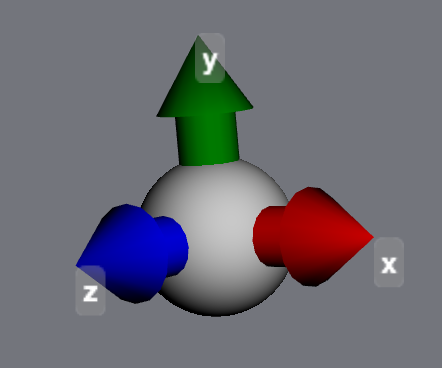

4. Geometry tools¶
4.1. Atomic positions¶
{kind=link}
Atomic positions are accessible both as vectors and scalars:
>>> mol = mdt.from_smiles('CCC')
>>> atom = mol.atoms[0]
>>> atom.position
<Quantity([ 0.99016981 0.04194212 0.10581842], 'ang')>
>>> atom.x
<Quantity(0.990169808818, 'ang')>
>>> atom.z
<Quantity(0.105818418471, 'ang')>
These quantities can be updated, not just read. Everything is kept automatically in sync - changing atom.position will automatically change atom.x, atom.y and atom.z, and vice versa:
>>> atom.x = 5.0 * u.angstrom
>>> atom.position
<Quantity([ 5. 0.04194212 0.10581842], 'ang')>
>>> atom.position = [0,0,0] * u.angstrom
>>> atom.x, atom.y, atom.z
(<Quantity(0.0, 'ang')>, <Quantity(0.0, 'ang')>, <Quantity(0.0, 'ang')>)
4.2. Internal coordinates¶
The moldesign.geom module contains a variety of methods for measuring (and
manipulate geometry).
You can get the distance between any two atoms with the
atom.distance method.
>>> atom1.distance(atom2)
[...] angstrom
Bond angles and dihedral (twist) angles can be measured using the moldesign.angle()
and moldesign.dihedral() methods:
>>> moldesign.angle(atom1, atom2, atom3)
[...] radians
>>> moldesign.dihedral(atom1, atom2, atom3, atom4)
[...] radians
Measuring a dihedral (or twist) angle can be a pain, because they are defined as a function of four atomic positions. For quick measurements, you can pass in only the two central atoms in the dihedral, and MDT will infer the others. Any of the following call signatures will work:
>>> moldesign.dihedral(a1, a2, a3, a4)
>>> moldesign.dihedral(a1, a2)
>>> moldesign.dihedral(bond)
For applications that require derivatives, the gradients of these quantites are also available using the moldesign.distance_gradient(), moldesign.angle_gradient(), and moldesign.dihedral_gradient().
4.3. Manipulating coordinates¶
Internal coordinates can also be manipulated using the moldesign.set_distance(), moldesign.set_angle(), and moldesign.set_dihedral() functions.
Note that these functions can work in two ways. We’ll illustrate this with ethylene:
>>> ethylene = mdt.from_smiles('C=C')
>>> ethylene.draw3d()

By default, MDT will move all atoms affected by the change (equivalent to manipulating the molecule’s internal coordinates). Here, although we only explicitly change the distance between the two carbons, the methylene groups move as well:
>>> mdt.set_distance(ethylene.atoms[0], ethylene.atoms[1], 3.0 * u.angstrom)
{kind=link}
However, if the keyword adjustmol is set to False, only the specified atoms will be moved; the hydrogens stay in their original positions:
>>> ethylene = mdt.from_smiles('C=C')
>>> mdt.set_distance(ethylene.atoms[0], ethylene.atoms[1],
>>> 3.0 * u.angstrom,
>>> adjustmol=False)
>>> ethylene.draw3d()
{kind=link}
In notebooks, these quantities can be changed interactively using the GeometryBuilder widget:
>>> mdt.GeometryBuilder(ethylene)

4.4. Monitor coordinates¶
Geometry monitor classes can simplify the process of tracking and manipulating internal coordinates.
>>> ethylene = mdt.from_smiles('C=C')
>>> distance_monitor = mdt.DistanceMonitor(ethylene.atoms[0], ethylene.atoms[1])
>>> distance_monitor.value
<Quantity(1.51205701815, 'ang')>
>>> ethylene.draw3d()
Changing the monitor’s value will change the molecular geometry:
>>> distance_monitor.value = 3.0 * u.angstrom
>>> ethylene.draw()
4.5. Groups of atoms¶
Most groups of atoms in MDT - including molecules, residues, and even arbitrary lists of atoms in AtomLists - have built-in geometric analysis and manipulation methods (inherited from the AtomContainer class).
Analysis methods include calculating a center of mass,
>>> mol = mdt.from_pdb('1YU8')
>>> mol.center_of_mass
<Quantity([ 10.59496153 15.55064957 21.02801831], 'ang')>
>>> mol.residues[0].center_of_mass
<Quantity([ 10.24884993 27.76183367 19.85926777], 'ang')>
the distance between two groups of atoms (i.e., the minimum distance between any pair of atoms in the two objects),
>>> r1 = mol.residues[0]
>>> r2 = mol.residues[1]
>>> r1.distance(r2)
<Quantity(1.32810161367, 'ang')>
and arrays of distances between the atoms in two objects:
>>> array = r1.calc_distance_array(r2)
>>> array
<Quantity([[ 3.49805684 4.74654325 ...]
[ 2.43405388 3.8018831 ...]
...], 'ang')>
where array[i,j] == r1.atoms[i].distance(r2.atoms[j]).
In addition, groups of atoms can be moved using their translate and rotate methods.
4.6. Analyze dynamics¶
WIP
4.7. Constrain geometry¶
Geometric constraints - coordinates that are held constant during dynamics or minimizations - can be created using Molecule methods:
>>> dist_constraint = mol.constrain_distance(mol.atoms[0], mol.atoms[1])
>>> ang_constraint = mol.constrain_angle(mol.atoms[0], mol.atoms[1], mol.atoms[2])
These constraint <moldesign.geom.constraints.GeometryConstraint objects can be queried:
>>> dist_constraint.error()
<Quantity(0.0, 'ang')>
>>> dist_constraint.satisfied()
True
and can be manipulated via their value and tolerance attributes.
For convenience, constraints can also be created from Geometry monitor objects:
>>> distance = mdt.DistanceMonitor(mol.atoms[0], mol.atoms[1])
>>> constraint = distance.constrain()
Molecular constraints are stored in a list at molecule.constraints. To remove all constraints from a molecule, use the clear_constraints method.